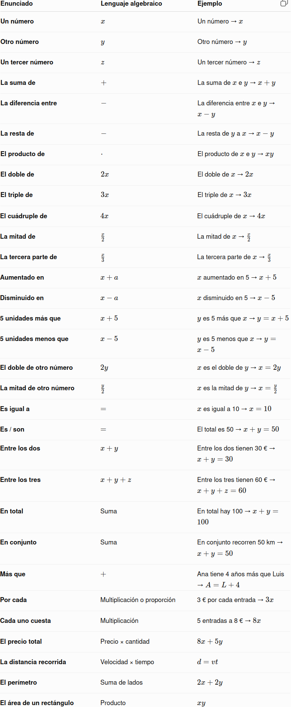

Problemas que se resuelven mediante sistemas
Muchos problemas de la vida cotidiana pueden traducirse a sistemas de ecuaciones.
Los más habituales son:
- Problemas de números.
- Problemas de edades.
- Problemas de precios y cantidades.
- Problemas de entradas y recaudación.
- Problemas de mezclas.
- Problemas de movimiento y velocidades.
- Problemas de trabajo y productividad.
- Problemas de perímetros y áreas.
- Problemas geométricos.
- Problemas de reparto.
- Problemas cotidianos con dos o tres incógnitas.
La dificultad principal no suele estar en resolver el sistema, sino en traducir correctamente el enunciado al lenguaje algebraico.
Pasos para resolver un problema mediante un sistema
Paso 1. Comprender el problema
Lee detenidamente el enunciado y determina qué información proporciona y qué se quiere averiguar.
Paso 2. Elegir las incógnitas
Define claramente las incógnitas.
Por ejemplo:
\(x=\text{número de entradas de adulto}\)
\(y=\text{número de entradas infantiles}\)
Paso 3. Traducir la información a ecuaciones
Convierte las relaciones del enunciado en expresiones algebraicas.
Paso 4. Resolver el sistema
Puedes utilizar sustitución, igualación o reducción.
Paso 5. Interpretar la solución
Los valores obtenidos deben tener sentido en el contexto del problema.
Paso 6. Comprobar
Comprueba que los valores cumplen las condiciones del enunciado.
Paso 7. Responder
Escribe una respuesta final clara, utilizando las unidades correspondientes.
Ejemplo 1: problema de números
La suma de dos números es 42 y el triple del primero menos el segundo es 18. ¿Cuáles son los números?
Definimos:
\(x=\text{primer número}\)
\(y=\text{segundo número}\)
Planteamos:
\(\begin{cases} x+y=42\\ 3x-y=18 \end{cases}\)
Sumamos ambas ecuaciones:
\(4x=60\)
\(x=15\)
Entonces:
\(y=42-15=27\)
Solución: los números son \(15\) y \(27\).
Ejemplo 2: problema de edades
Ana tiene el doble de edad que Pablo. Dentro de 6 años, entre los dos tendrán 54 años. ¿Qué edad tiene cada uno actualmente?
Definimos:
\(x=\text{edad de Ana}\)
\(y=\text{edad de Pablo}\)
Como Ana tiene el doble:
\(x=2y\)
Dentro de 6 años:
\((x+6)+(y+6)=54\)
Sistema:
\(\begin{cases} x=2y\\ x+y+12=54 \end{cases}\)
Por tanto:
\(x+y=42\)
Sustituimos:
\(2y+y=42\)
\(3y=42\)
\(y=14\)
\(x=28\)
Solución: Ana tiene 28 años y Pablo 14 años.
Ejemplo 3: precios y cantidades
Cinco cuadernos y tres carpetas cuestan 29 €. Dos cuadernos y cuatro carpetas cuestan 20 €. ¿Cuál es el precio de cada producto?
Definimos:
\(x=\text{precio de un cuaderno}\)
\(y=\text{precio de una carpeta}\)
Sistema:
\(\begin{cases} 5x+3y=29\\ 2x+4y=20 \end{cases}\)
Resolviendo:
\(x=4,\qquad y=3\)
Solución: cada cuaderno cuesta 4 € y cada carpeta 3 €.
Ejemplo 4: entradas y recaudación
En un espectáculo se venden 120 entradas. Las entradas de adulto cuestan 8 € y las infantiles 5 €. La recaudación total es de 810 €. ¿Cuántas entradas de cada tipo se vendieron?
Definimos:
\(x=\text{entradas de adulto}\)
\(y=\text{entradas infantiles}\)
Número total:
\(x+y=120\)
Recaudación:
\(8x+5y=810\)
Sistema:
\(\begin{cases} x+y=120\\ 8x+5y=810 \end{cases}\)
Resolviendo:
\(x=70,\qquad y=50\)
Solución: se vendieron 70 entradas de adulto y 50 infantiles.
Ejemplo 5: mezclas
Queremos obtener 20 litros de una mezcla al 30 % utilizando una sustancia al 20 % y otra al 50 %. ¿Cuántos litros necesitamos de cada una?
Definimos:
\(x=\text{litros de sustancia al 20 %}\)
\(y=\text{litros de sustancia al 50 %}\)
Cantidad total:
\(x+y=20\)
Cantidad de sustancia pura:
\(0,20x+0,50y=0,30\cdot20\)
Por tanto:
\(\begin{cases} x+y=20\\ 0,20x+0,50y=6 \end{cases}\)
Resolviendo:
\(x=\dfrac{40}{3}\approx13,33\)
\(y=\dfrac{20}{3}\approx6,67\)
Solución: necesitamos aproximadamente 13,33 litros de la primera sustancia y 6,67 litros de la segunda.
Ejemplo 6: movimiento y velocidades
Dos ciclistas salen al mismo tiempo en sentidos opuestos. Después de 2 horas están separados 50 km. Uno de ellos circula a una velocidad 5 km/h mayor que el otro. ¿A qué velocidad circula cada uno?
Definimos:
\(x=\text{velocidad del primer ciclista}\)
\(y=\text{velocidad del segundo ciclista}\)
Como uno es 5 km/h más rápido:
\(x=y+5\)
En dos horas recorren conjuntamente 50 km:
\(2x+2y=50\)
Sistema:
\(\begin{cases} x-y=5\\ 2x+2y=50 \end{cases}\)
Resolviendo:
\(x=15,\qquad y=10\)
Solución: las velocidades son 15 km/h y 10 km/h.
Ejemplo 7: trabajo y productividad
Dos trabajadores realizan juntos un trabajo en 6 horas. Si trabajara solo el primero, tardaría 5 horas más que el segundo. ¿Cuánto tardaría cada uno trabajando por separado?
Si el segundo tarda \(x\) horas, el primero tarda:
\(y = x+5\)
Debido a la simplicidad de la relación, podemos incluso no requerir usar una variable \(y\), refiriéndonos directamente a lo que tarda el primero como:
\(x+5\)
La tasa de trabajo del segundo es:
\(\dfrac{1}{x}\)
y la del primero:
\(\dfrac{1}{x+5}\)
Como juntos realizan el trabajo en 6 horas:
\(\dfrac{1}{x}+\dfrac{1}{x+5}=\dfrac16\)
Resolviendo:
\(x=10\)
Por tanto:
\(x+5=15\)
Solución: uno tardaría 10 horas y el otro 15 horas trabajando por separado.
Ejemplo 8: perímetro y área
Un rectángulo tiene un perímetro de 34 cm y un área de 60 cm². ¿Cuáles son sus dimensiones?
Si sus lados son \(x\) e \(y\):
Perímetro:
\(2x+2y=34\)
Área:
\(x·y=60\)
Por tanto:
\(\begin{cases} x+y=17\\ x·y=60 \end{cases}\)
Buscamos dos números cuya suma sea 17 y cuyo producto sea 60:
\(5+12=17\)
\(5\cdot12=60\)
Solución: las dimensiones son 5 cm y 12 cm.
Ejemplo 9: problema geométrico
Un triángulo rectángulo tiene una hipotenusa de 13 cm. Uno de sus catetos mide 7 cm más que el otro. ¿Cuánto mide cada cateto?
Definimos:
\(x=\text{cateto menor} \)
\(y=\text{cateto mayor}\)
Como uno mide 7 cm más:
\(y=x+7\)
Aplicamos el teorema de Pitágoras:
\(x^2+y^2=13^2\)
Por tanto:
\(\begin{cases} y=x+7\\ x^2+y^2=169 \end{cases}\)
Sustituimos:
\(x^2+(x+7)^2=169\)
Resolviendo:
\(x=5\)
y:
\(y=12\)
Solución: los catetos miden 5 cm y 12 cm.
Ejemplo 10: un problema con tres incógnitas
En una tienda se venden bocadillos a 4 €, zumos a 2 € y piezas de fruta a 1 €. En total se venden 60 productos y se recaudan 156 €. Además, se venden el doble de zumos que de piezas de fruta. ¿Cuántos productos de cada tipo se venden?
Definimos:
\(x=\text{bocadillos}\)
\(y=\text{zumos}\)
\(z=\text{piezas de fruta}\)
Número total:
\(x+y+z=60\)
Recaudación:
\(4x+2y+z=156\)
Relación entre productos:
\(y=2z\)
Sistema:
\(\begin{cases} x+y+z=60\\ 4x+2y+z=156\\ y=2z \end{cases}\)
Sustituimos \(y=2z\):
\(x+3z=60\)
\(4x+5z=156\)
De la primera:
\(x=60-3z\)
Sustituimos:
\(4(60−3z)+5z=156\)
\(240−12z+5z=156\)
\(-7z=-84\)
\(z=12\)
Entonces:
\(y=24\)
y:
\(x=24\)
Solución: se venden 24 bocadillos, 24 zumos y 12 piezas de fruta.
Ejemplo 11: problema de reparto
Tres amigos reciben conjuntamente 840 € para repartir entre ellos. El segundo recibe el doble que el primero y el tercero recibe 120 € más que el primero. ¿Cuánto dinero recibe cada uno?
Definimos las incógnitas:
\(x=\text{dinero que recibe el primero}\)
\(y=\text{dinero que recibe el segundo}\)
\(z=\text{dinero que recibe el tercero}\)
Traducimos la información:
El dinero total es 840 €:
\(x+y+z=840\)
El segundo recibe el doble que el primero:
\(y=2x\)
El tercero recibe 120 € más que el primero:
\(z=x+120\)
Tenemos el sistema:
\(\begin{cases} x+y+z=840\\ y=2x\\ z=x+120 \end{cases}\)
Sustituimos \(y=2x\) y \(z=x+120\) en la primera ecuación:
\(x+2x+(x+120)=840\)
\(4x+120=840\)
\(4x=720\)
\(x=180\)
Ahora calculamos los otros valores:
\(y=2\cdot180=360\)
\(z=180+120=300\)
Comprobamos:
\(180+360+300=840\)
La igualdad se cumple.
Solución
\(\boxed{x=180 \text{€, } \quad y=360 \text{€, } \quad z=300 \text{€}}\)
El primer amigo recibe 180 €, el segundo 360 € y el tercero 300 €.
Errores frecuentes
Al resolver sistemas y problemas debemos evitar los siguientes errores:
- No definir correctamente las incógnitas.
- Traducir incorrectamente una relación del enunciado.
- Confundir el orden de las cantidades.
- Cambiar el signo de un término al operar.
- Multiplicar solo una parte de una ecuación.
- Olvidar que al dividir hay que hacerlo por un número distinto de cero.
- Realizar una operación entre ecuaciones que no conserve la equivalencia.
- No comprobar la solución.
- Obtener una solución matemática que no tenga sentido en el contexto del problema.
- Confundir un sistema sin solución con uno de infinitas soluciones.
- No interpretar correctamente expresiones como \(0=0\) y \(0=5\).
Ideas fundamentales que debes recordar
\(\boxed{\text{Sistema}=\text{varias ecuaciones que deben cumplirse simultáneamente}}\)
\(\boxed{\text{Ecuaciones equivalentes}=\text{mismas soluciones}} \)
\(\boxed{\text{Sistemas equivalentes}=\text{mismas soluciones simultáneas}}\)
\(\boxed{\text{Reducción}=\text{transformar el sistema mediante operaciones elementales}}\)
Las operaciones elementales entre ecuaciones son:
- Intercambiar dos ecuaciones.
- Multiplicar una ecuación por un número distinto de cero.
- Sustituir una ecuación por ella misma más un múltiplo de otra.
La clasificación de un sistema es:
\(\boxed{\text{SCD}\rightarrow\text{una solución}}\)
\(\boxed{\text{SCI}\rightarrow\text{infinitas soluciones}}\)
\(\boxed{\text{SI}\rightarrow\text{ninguna solución}}\)
Y recuerda:
Resolver un problema no es solo resolver el sistema:
\(\boxed{\text{Resolver un problema no es solo resolver el sistema: hay que interpretar la solución.}}\)
Vocabulario: del lenguaje cotidiano al lenguaje algebraico

🧠 Una estrategia sencilla
Cuando leas un problema, puedes seguir estos 4 pasos:
1. Busca qué tienes que averiguar.
¿Qué cantidades son desconocidas?
2. Ponles una letra.
\(x=\) número de entradas de adulto
\(y=\) número de entradas infantiles
3. Busca las palabras que relacionan las cantidades.
«En total» → suma
«El doble» → \(2x\)
«5 más» → \(x+5\)
«3 menos» → \(x-3\)
4. Convierte cada información en una ecuación.
Por ejemplo:
«Hay 100 entradas en total y las de adulto son el doble que las infantiles».
Si:
\(x=\text{adultos}\)
\(y=\text{infantiles}\)
entonces:
\(\boxed{x+y=100}\)
\(\boxed{x=2y}\)
Y ya tenemos el sistema:
\(\boxed{ \begin{cases} x+y=100\\ x=2y \end{cases}}\)
⭐ Idea clave
No intentes resolver el sistema mientras estás leyendo el problema. Primero traduce.
PALABRAS→RELACIONES→ECUACIONES→SISTEMA→SOLUCIÓN